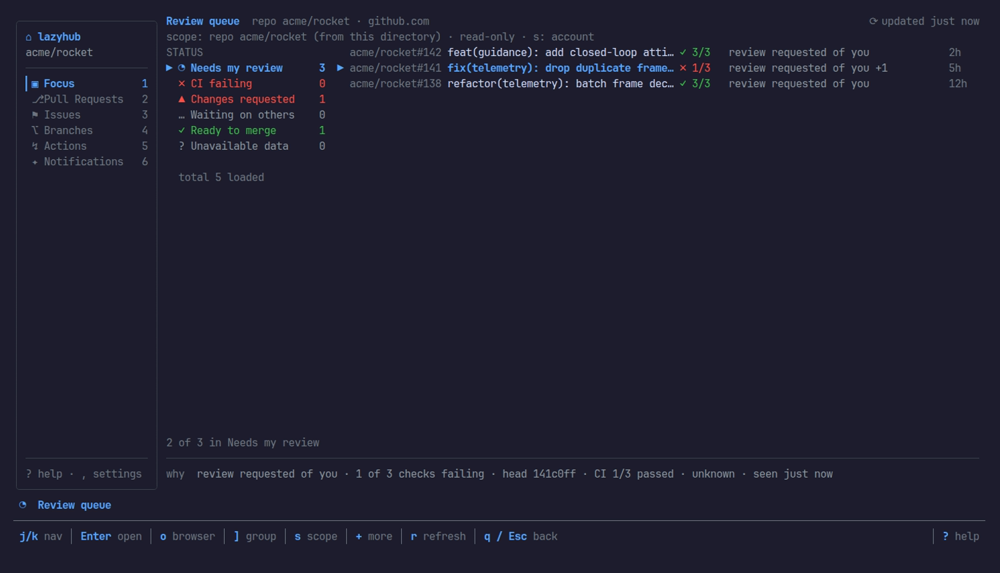

Review pull requests at terminal speed
lazyhub is a keyboard-driven terminal workspace for reviewing GitHub pull requests, whether a person or an agent wrote them. It tells you what needs your attention, shows the evidence behind a PR, and explains why CI is red. It runs on the gh session you already have.
$ npm install -g lazyhub
$ lazyhub$ brew install saketh-kowtha/tap/lazyhub
$ lazyhub$ npx lazyhubNeeds Node.js 20 or later and the GitHub CLI (gh auth login). Install the tap by its full name: this is saketh-kowtha/lazyhub, not the unrelated Go project ryo-ma/lazyhub.
- MIT licensed
- Node 20+
- GitHub.com and Enterprise Server
- No telemetry

What it does
Know what to review next
Press g q for a queue of open PRs that ask for your review or that you opened, starting with the repository you are in. Every row says why it is there. There is no score and no verdict.
See the evidence, not the pitch
Press e on a PR for facts with their source and read time, V to check the description's claims against the diff, and K to find open PRs that touch the same files.
Find out why CI is red
Press f on a PR to go from a failing check to its log excerpt and, where GitHub's diff allows, to the changed line it points at.
Review features
Everything below is read-only: it reads through gh and writes nothing to GitHub. Anything GitHub did not return is shown as unknown, never as safe.
Review queue
An explainable attention queue grouped by status: needs your review, CI failing, changes requested, waiting, ready. Launched inside a clone it shows that repository; s switches to your whole account, an organisation or a repository set from [queue] in your config. Open a row to land on its evidence and press Esc to come back to the same place.
- g q open the queue
- ] [ next and previous status group
- Enter open the PR's evidence
- s repository, account, organisation or set
- + load more, o open in the browser
Evidence
One screen of observed facts about a PR: the head commit, required checks, changed files, unresolved threads and who acted. Each fact names its source and when it was read. If the head moves while you look, the view says the earlier reading no longer applies. PR text written by the author sits under its own heading.
- e from a PR: evidence
- Esc back to where you were
Why is CI red?
For each failing check (up to five) lazyhub shows the failing step, a redacted log excerpt, the lines of the PR the log points at, and whether the same check also fails on recent base-branch commits. Anything it cannot determine says unknown with the reason.
- f from a PR or its checks: why red
- c from a PR: checks, Enter for a log
Claims check
A PR description says what it does. The claims check reads a fixed set of claim phrasings from it and marks each one verified, contradicted or unverifiable against the changed files and linked issues. A claim is never verified without evidence rows. It is deterministic and uses no AI, and the description is treated as data, never as instructions.
- V from a PR: claims
Collision radar
Lists other open PRs that change the same files, and suggests a merge order. Generated files such as lockfiles are flagged so those PRs are merged one at a time. You can add patterns under [features.prs].generated_files.
- K from a PR: collisions
Review story
A guided walk through a diff: steps such as the core change, call sites, config, tests and noise, each with the reason a file was grouped there (path-based grouping, not a model). It also shows what changed since your last review, or says it is unknown, for example after a force-push.
- s from a PR: story
- n p next and previous step
- Enter open the diff at the file
The rest of the workspace
Pull requests, issues, branches, runs, notifications
Vim-style movement (j k, g g, G), / to search, : for the command palette and ? for help in every view. Diffs, conversations, checks, merge, approve and comment are all there. See the full key list.
Enter that goes where you want
Enter opens the plain PR detail. If you want it to jump to a failing check log, to Files changed when your review is requested, or to the merge conflict, turn on smart Enter with [state] smartEnter = true. It is off by default.
HTML in Markdown
PR and issue bodies that contain HTML (tables, <details>, headings, links, image alt text) render as formatted terminal text through a strict allowlist. Scripts, styles and frames are dropped with a visible marker. Images are never fetched.
AI on subscriptions you already have
AI features use a CLI you already have signed in (claude, codex or gemini) in a sandbox, or an API key. For Codex you can opt in to your own login with lazyhub ai login enable codex. lazyhub ai status shows what is set up. Gemini login mode is not built yet, and Claude uses claude setup-token rather than a login mode.
MCP server (read-only)
lazyhub --mcp serves pull request, diff, check, issue, notification and branch reads to coding agents over stdio. It advertises no write tools. Review-queue, evidence and why-red tools over MCP are not shipped yet.
Themes and plain terminals
The default theme follows your terminal's own 16 colours. Pick another in TOML, or use NO_COLOR or ASCII icons for limited terminals. With the default theme, the selected row is marked by a gutter glyph as well as colour.
Fast, and complete
lazyhub keeps its output shorter than the terminal so Ink writes only what changed instead of clearing and redrawing the screen. These numbers come from the repository's own npm run vitals harness: the built app in a pseudo-terminal at 80 by 24, against a fake gh that takes 300 ms per call, on a laptop (macOS, Node 22). Ranges are the spread across several local runs. They show the app's share of the time on a fixture, not GitHub's, and are not a promise about your network.
400–460 mscold PR list: key to first rows (one 300 ms round trip included)
7–11 mskeypress to next frame while moving in a list, 95th percentile
13–22 msreopening a list you already loaded
0frames that cleared the screen, of about 66 in the run
Lists and diffs also fill in behind a skeleton instead of blocking, views you navigate away from stay alive so Esc goes back without a new gh call, and several write actions update the row before GitHub answers, then say so and revert if GitHub refuses. One reopen path still makes one network call, tracked as a known gap.
Speed never means silent cuts. The CI performance budget drives a fixture of 5,000 open and 80,000 closed PRs and a 3,000-file, 100,000-line diff, and asserts the exact pages fetched. GitHub search returns at most 1,000 results, so a list stops there and the footer says so. Peak memory stays between 150 and 225 MB in that run, against a 512 MB budget. Details are in PERF_BUDGETS.
Private by design
- No telemetry. No analytics, no crash reporting, no phone-home.
LAZYHUB_PERF=1records timings to a local file only, andlazyhub perf reportreads it. - Your existing credentials. lazyhub reaches GitHub only through
gh, with the account and hostghis signed in to. - Untrusted text stays data. PR titles, bodies and comments are cleaned of terminal escape sequences before they are drawn, and are never used as instructions or as an authorization input.
- Reports describe observation.
watch-onlyanddoctor --coveragestate what lazyhub could see; they do not approve, block or enforce anything. No GitHub App or required check enforces approval yet. - Feedback is yours to send.
lazyhub feedbackopens a pre-filled GitHub issue with redacted diagnostics; nothing is sent until you submit it.
Read the threat model and security policy.
Review Alpha: what it is and isn't
lazyhub is in its Review Alpha stage. It is the read-only review journey on this page, over your existing gh login: queue, evidence, why CI is red, claims, collisions and story, installed from npm or Homebrew.
- Not an enforcement system. No GitHub App or required check enforces approval. That is a separate, optional stage that is not built.
- Not a verdict. It shows facts, sources and unknowns, and never says a change is safe.
- Not an agent that writes. The MCP server and the AI assistant are read-only. Review tools over MCP, a Claude Code plugin, hand-off to a coding agent and a GitHub Action are not shipped.
- Not a stable 1.0. Keys, views and config may still change between releases.
The project learns only what you choose to send: an issue, lazyhub feedback, or a pilot session you agreed to.
GitHub Enterprise Server
If gh is signed in to your Enterprise host, lazyhub picks that host from the repository's remotes, including SSH aliases. To be explicit:
$ gh auth login --hostname github.example.com
$ GH_HOST=github.example.com lazyhub --repo owner/namePR and issue URLs on your configured Enterprise host also work as lazyhub <url>. Remotes on GitLab, Bitbucket and other forges are skipped rather than treated as GitHub hosts.
Try it
Run lazyhub inside a clone, or lazyhub owner/repo#123 to open one PR. On a first run it helps you pick a repository, then opens the Focus dashboard.